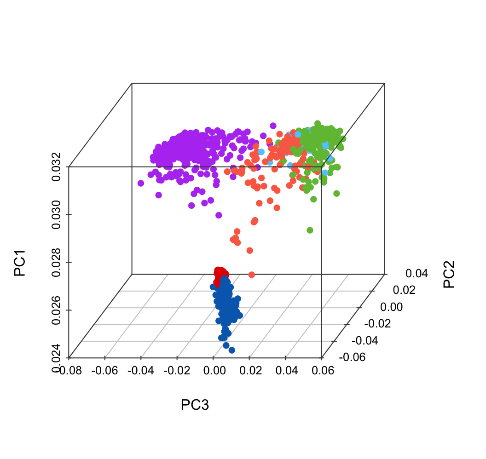
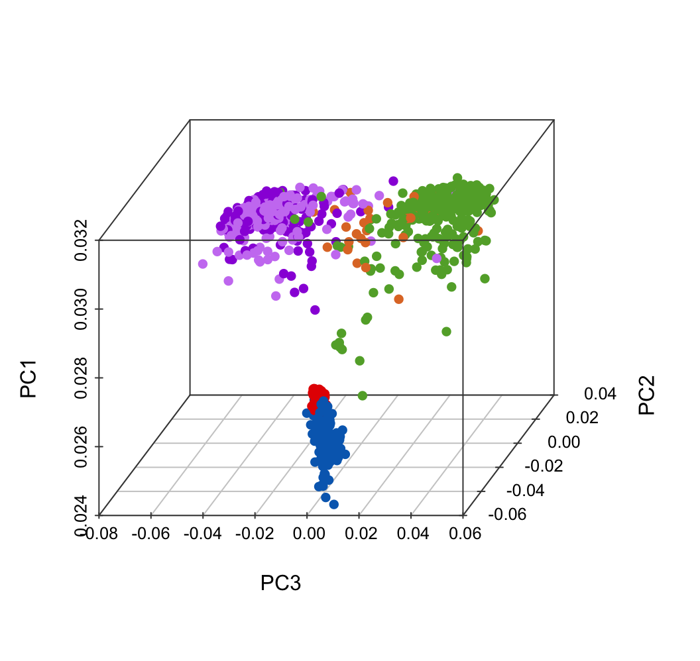

Chapter 2 PitNETs
2.1 RNA-seq data
The RNA-sequencing expression matrix (FASTQ input) was generated using RSEM (https://deweylab.github.io/RSEM/).
#!/bin/bash
#SBATCH -p SVC # partition (queue)
#SBATCH --job-name=PitNETs
#SBATCH -n 40
#SBATCH --array=1
#SBATCH -t 7-00:00 # time (D-HH:MM)
#SBATCH -o _log/rsem.%A_%a.out # STDOUT
#SBATCH -e _log/rsem.%A_%a.err # STDERR
#SBATCH --mail-type=END,FAIL # notifications for job done & fail
#SBATCH --mail-user=XX@qq.com # send-to address
id=`sed -n ${SLURM_ARRAY_TASK_ID}p sample.txt`
echo "${id}"
fq_path=${fq_path}
fq1=${fq_path}/${id}_R1.fq.gz
fq2=${fq_path}/${id}_R2.fq.gz
gtf_file=${gtf_file}/gencode.v45.annotation.gtf
rsem_path=${rsem_path}/gencode.v45.rsem
star_path=${star_path}/star_v45_2.7.11a
out_path=${out_path}/rsem_v45
echo ${id}
mkdir ${out_path}/${id}
STAR --runThreadN 40 --genomeDir ${star_path} \
--readFilesCommand zcat \
--readFilesIn ${fq1} ${fq2} \
--outFileNamePrefix ${out_path}/${id}/${id}. \
--outSAMtype BAM SortedByCoordinate \
--outBAMsortingThreadN 40 \
--quantMode TranscriptomeSAM GeneCounts
rsem-calculate-expression --paired-end --no-bam-output \
--alignments -p 40 \
-q ${out_path}/${id}/${id}.Aligned.toTranscriptome.out.bam \
${rsem_path} \
${out_path}/${id}/${id}.rsem2.2 PCA
Setting colors and R libraries.
suppressWarnings({
library(openxlsx)
library(dplyr)
library(DT)
library(nlme)
library(DESeq2)
library(SummarizedExperiment)
library(openxlsx)
library(stats)
library(ggplot2)
library(ggpubr)
library(limma)
library(ggthemes)
library(scatterplot3d)
library(stringr)
})
color.group <- c(G1 = "#ffade7", G2 = "#ef43c4", G3 = "#8313bf",
G4 = "#F4D31D", G5 = "#F4A11D", G6 = "#68c436")
color.group.nor <- c(G1 = "#ffade7", G2 = "#ef43c4", G3 = "#8313bf",
G4 = "#F4D31D", G5 = "#F4A11D", G6 = "#68c436",
Normal = "#BBBBBB")
color.group.merge <- c(G1 = "#ffade7", G2 = "#ef43c4", G3 = "#8313bf",
G4 = "#F4D31D", G5 = "#F4A11D", G6 = "#68c436",
TB = "#e50000", NB = "#006abc")
color.tissue <- c(Normal_blood = "#006abc", Tumor_blood = "#e50000", Tumor = "#ffbd19" )
color.bin <- c("#D01910","#00599F")
color.age <- c(Male = "#f760e8", Female = "#1fd3a6")
color.lineage <- c("PIT1" = "#b646f2", "TPIT" = "#fc6c53", "SF1" = "#70bf42", "Null" = "#60caff")
color.lineage.merge <- c("PIT1" = "#b646f2", "TPIT" = "#fc6c53", "SF1" = "#70bf42", "Null" = "#60caff",
Normal_blood = "#006abc", Tumor_blood = "#e50000" )
color.hormone <- c("PRL" = "#cb82f2", "GH" = "#9a23db", "ACTH" = "#e0782f", "NFPA" = "#62aa34")
color.lineage.nor <- c("PIT1" = "#b646f2", "TPIT" = "#fc6c53", "SF1" = "#70bf42",
"Null" = "#60caff", "Normal" = "#BBBBBB")
color.lib <- c("#A6761D", "#A6CEE3", "#1F78B4", "#B2DF8A", "#33A02C", "#FB9A99",
"#7570B3", "#E7298A", "#66A61E", "#E6AB02", "#1B9E77", "#D95F02",
"#E31A1C", "#FDBF6F", "#FF7F00", "#CAB2D6", "#6A3D9A", "#F4B3BE",
"#F4A11D", "#8DC8ED", "#4C6CB0", "#8A1C1B", "#CBCC2B", "#EA644C",
"#634795", "#005B1D", "#26418A", "#CB8A93", "#F1E404", "#E22826",
"#50C1FF", "#F4D31D", "#F4A11D", "#82C800", "#8B5900", "#858ED1",
"#FF72E1", "#CB50B2", "#007D9B", "#26418A", "#8B495F", "#FF394B",
"#FFDBF7", "#602B2B")
color.lr <- c(
C1 = "#7f006d", C2 = "#D95F02", C3 = "#497c0e",
R1 = "#CEC3E0", R2 = "#ffd35f", R3 = "#c4ceff", R4 = "#9987f2",
R5 = "#F0B8D2", R6 = "#84d7f6", R7 = "#b6d37f", R8 = "#5c95e0"
)
normal.cutoff.male <- list(
Cortisol = c(6.70, 22.60),
ACTH = c(7.20, 63.30),
T3 = c(0.54, 2.96),
T4 = c(62.67, 150.84),
TSH = c(0.35, 4.94),
PRL = c(3.46, 19.40),
E2 = c(10.01, 854.00),
GH = c(0.003, 0.971),
FT3 = c(2.43, 6.01)
)
normal.cutoff.female <- list(
Cortisol = c(6.70, 22.60),
ACTH = c(7.20, 63.30),
T3 = c(0.54, 2.96),
T4 = c(62.67, 150.84),
TSH = c(0.35, 4.94),
PRL = c(5.18, 26.53),
E2 = c(10.01, 854.00),
GH = c(0.01, 3.61),
FT3 = c(2.43, 6.01)
)Run PCA for total samples, including 883 PitNET tissues, 108 PitNET PBMCs and 175 normal PBMCs.
exp.merge <- readRDS("20250925_PitNETs_tissue_PBMC_s1166.rds")
res.pca.comp <- prcomp(exp.merge, scale = TRUE)
plot.data <- as.data.frame(res.pca.comp$rotation[, 1:10])
plot.data$SampleID = rownames(plot.data)
sum(plot.data$SampleID != meta.data.merge$SampleID)
plot.data$GroupHormone <- meta.data.merge$GroupHormoneplot.data <- read.xlsx("data/011.PCA.xlsx")
plot.data$color <- color.tissue[match(plot.data$Tissue, names(color.tissue))]
scatterplot3d(x = plot.data$PC3,
y = plot.data$PC2,
z = plot.data$PC1,
color = plot.data$color,
pch = 16, cex.symbols = 1,
scale.y = 0.7, angle = 45,
xlab = "PC3", ylab = "PC2", zlab = "PC1",
col.axis = "#444444", col.grid = "#CCCCCC")plot.data$color <- color.lineage.merge[match(plot.data$LineageTissue, names(color.lineage.merge))]
scatterplot3d(x = plot.data$PC3,
y = plot.data$PC2,
z = plot.data$PC1,
color = plot.data$color,
pch = 16, cex.symbols = 1,
scale.y = 0.7, angle = 45,
xlab = "PC3", ylab = "PC2", zlab = "PC1",
col.axis = "#444444", col.grid = "#CCCCCC")
sub <- c(color.hormone, Normal_blood = "#006abc", Tumor_blood = "#e50000")
plot.data$color <- sub[match(plot.data$GroupHormone, names(sub))]
scatterplot3d(x = plot.data$PC3,
y = plot.data$PC2,
z = plot.data$PC1,
color = plot.data$color,
pch = 16, cex.symbols = 1,
scale.y = 0.7, angle = 45,
xlab = "PC3", ylab = "PC2", zlab = "PC1",
col.axis = "#444444", col.grid = "#CCCCCC")
Run PCA for PBMC samples, including 108 PitNET PBMCs and 175 normal PBMCs.
2.3 DEGs
pdata <- meta.data.merge[which(meta.data.merge$Tissue != "Tumor"), ]
pdata$contrast <- as.factor(pdata$Tissue)
design <- model.matrix(~ 0 + contrast + Gender + Age , data = pdata)
colnames(design) <- str_replace_all(colnames(design), fixed("contrast"), "")
fit <- lmFit(exp.merge[, pdata$SampleID], design)
contrast <- makeContrasts(TB_CB = Tumor_blood - Normal_blood, levels = design)
fits <- contrasts.fit(fit, contrast)
ebFit <- eBayes(fits)
deg_sig_list <- topTable(ebFit, coef = 1, adjust.method = 'fdr', number = Inf)
deg.data <- deg_sig_list[which(!is.na(deg_sig_list$adj.P.Val)), ]
deg.data$logP <- -log10(deg.data$adj.P.Val)
deg.data$group = "zz"
deg.data$group[which( (deg.data$adj.P.Val < 0.05) & (deg.data$logFC > 0.58) )] = "up"
deg.data$group[which( (deg.data$adj.P.Val < 0.05) & (deg.data$logFC < -0.58) )] = "down"
table(deg.data$group)
deg.data$tag <- paste0("TB vs NB")
deg.data$Gene <- rownames(deg.data)
deg.data$GeneType <- gene.id$V6[match(deg.data$Gene, gene.id$V7)]##
## down up zz
## 685 322 18163##
## down up zz
## 685 322 18163p <- ggscatter(deg.data,
x = "logFC", y = "logP",
color = "group", size = 1,
main = paste0("TB vs NB"),
xlab = "log2FoldChange", ylab = "-log10(adjusted P.value)",
palette = c("#006abc", "#e50000", "#BBBBBB"))
p <- p + theme_few() + scale_x_continuous(limits = c(-3.6, 3.6))
p <- p + geom_hline(yintercept = 1.30, linetype="dashed", color = "#222222")
p <- p + geom_vline(xintercept = 0.58, linetype="dashed", color = "#222222")
p <- p + geom_vline(xintercept = -0.58, linetype="dashed", color = "#222222")
p## Warning: Removed 1 row containing missing values or values outside the scale range (`geom_point()`).2.4 Enrichment
plot.data <- read.xlsx("data/TableS2.xlsx", sheet = 2, startRow = 2)
plot.data <- plot.data[which(plot.data$Sample == "up in tumor PBMCs"), ]
plot.data$LogP <- -log10(plot.data$P.value)
p <- ggplot(plot.data, aes(x = Sample, y = Term, color = LogP, size = Count)) + geom_point()
p <- p + scale_y_discrete(limits = rev(c(plot.data$Term)) )
p <- p + theme_base() + theme(plot.background = element_blank())
p <- p + theme(axis.text.x = element_text(angle = 90, hjust = 1, vjust = 0.5, size = 10, color = "black"))
p <- p + xlab("") + ylab("")
p <- p + scale_size(range = c(4, 10), limits = c(5, 30))
p <- p + gradient_color(c("#FFCC66","#ce0000","#ce0000","#ce0000","#ce0000"))
pplot.data <- read.xlsx("data/TableS2.xlsx", sheet = 2, startRow = 2)
plot.data <- plot.data[which(plot.data$Sample == "down in tumor PBMCs"), ]
plot.data$LogP <- -log10(plot.data$P.value)
p <- ggplot(plot.data, aes(x = Sample, y = Term, color = LogP, size = Count)) + geom_point()
p <- p + scale_y_discrete(limits = rev(c(plot.data$Term)) )
p <- p + theme_base() + theme(plot.background = element_blank())
p <- p + theme(axis.text.x = element_text(angle = 90, hjust = 1, vjust = 0.5, size = 10, color = "black"))
p <- p + xlab("") + ylab("")
p <- p + scale_size(range = c(4, 10), limits = c(5, 30))
p <- p + gradient_color(c("#66d9f9","#0e6ab5","#0e6ab5","#0e6ab5"))
p